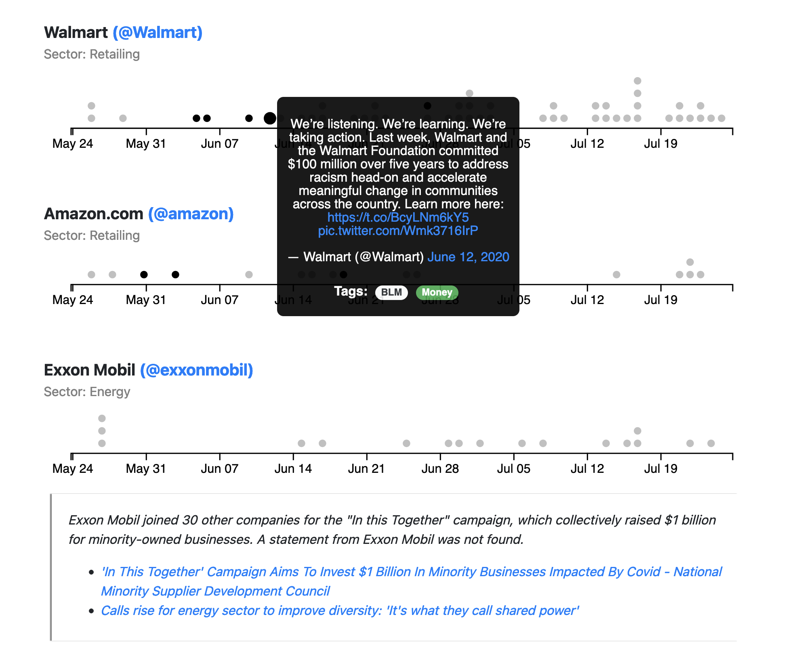

How to develop a research question
Typical research workflow
- Be curious and find a question that interests you.
- Try to find a way to answer your question with data. What kind of assumptions are you making when you make this leap?
- What are all the fields you need to answer this data-driven question?
- Execute scrape.
- Pare down data into just the information you need.
- Enrich the dataset with any external datasets if necessary. (If manually adding data, ensure that the time you’re prepared to invest are worth the question you’re trying to answer!)
- Analyze your data! Build charts to answer your original question. Were you wrong? That’s okay! That means you probably had a counter-intuitive result. What led you to have a wrong hypothesis?
Case Study 2: Analyzing Congressional Policy
What policy issues does Congresswoman Terri Sewell (D-AL 7th District, Princeton Class of 1986) care about? By scraping her account, we could collect all of her tweets and categorize them by issue as The Pudding did.
🏛️ Questions
- What kind of concrete takeaways can you make from Sewell’s Twitter activity?
- What kind of interpretive takeaways can you make from Sewell’s Twitter activity?
- What techniques did the Pudding use to put their data into perspective?
- How effective is this answering our original question?
Twitter Scraping Inspiration
- Subreddits
- r/datasets: Search here for your datasets before scraping! Sometimes someone else has already done the work.
- r/dataisbeautiful: Where data visualization fans show off their work. You’ll often see the cutting-edge here.
- r/dataisugly: Negative inspiration.
- Data journalists
- Data journalists are often the most approachable forms of data-driven research that you can read.
- The Pudding
- Washington Post Graphics
- NYT Graphics
- Data visualization projects and essays
- The Fortune 100 and Black Lives Matter: How did Fortune 100 companies react on Twitter to the death of George Floyd and the subsequent protests in the summer of 2020?
- What is Congress tweeting about?: Topic modeling to monitor what Congress is most

🪚 Exercise: Let’s workshop on 2-3 potential research questions together.